Quentin Alterescu est un product designer actuellement à la recherche de nouvelles opportunités professionnelles.
Curieux, empathique et collaboratif, je conçois des expériences utiles et humaines.
Quentin Alterescu est un product designer actuellement à la recherche de nouvelles opportunités professionnelles.
Curieux, empathique et collaboratif, je conçois des expériences utiles et humaines.
Qatent est une solution exploitant l'intelligence artificielle pour générer des brevets industriels. Malgré une puissance technologique importante, l'interface existante restait complexe et peu orientée acquisition.
Lorsque j'ai rejoint le projet, Qatent évoluait dans une culture produit principalement guidée par l'ingénierie. Les fonctionnalités étaient pensées pour des utilisateurs experts, ce qui rendait l'outil difficile d'accès et limitait son potentiel commercial.
En tant qu'UX Designer intervenant en solo pendant six mois, j'ai travaillé à clarifier des workflows complexes, simplifier la navigation et rendre l'outil plus lisible pour soutenir l'objectif stratégique du projet : utiliser le design comme levier pour trouver de nouveaux clients sans compromettre la profondeur technique de la solution.
Arriver seul designer dans une équipe d'ingénieurs demandait d'abord de gagner le droit d'intervenir sur les workflows. J'ai commencé par documenter l'existant écran par écran, un travail sans production visible mais qui m'a donné le vocabulaire nécessaire pour discuter d'égal à égal avec l'équipe technique.
Lorsque j'ai rejoint le projet, Qatent évoluait dans une culture produit principalement guidée par l'ingénierie. Les fonctionnalités étaient pensées pour des utilisateurs experts, ce qui rendait l'outil difficile d'accès et limitait son potentiel commercial.
En tant qu'UX Designer intervenant en solo pendant six mois, j'ai travaillé à clarifier des workflows complexes, simplifier la navigation et rendre l'outil plus lisible pour soutenir l'objectif stratégique du projet : utiliser le design comme levier pour trouver de nouveaux clients sans compromettre la profondeur technique de la solution.
Concrètement, la première rédaction d'un brevet demandait de passer par sept onglets sans qu'aucun n'indique l'étape suivante. L'outil supposait connue la logique de rédaction d'un brevet, ce qui allait de soi pour l'équipe mais pas pour un cabinet qui découvrait le produit en démonstration.
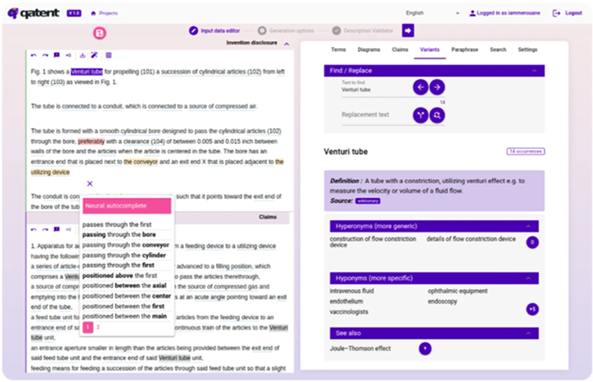
Pour orienter la refonte, j'ai participé à des entretiens avec des cabinets d'avocats ainsi qu'avec des utilisateurs potentiels afin de recueillir des insights concrets sur leurs besoins, leurs attentes et leurs freins face à l'outil.
Le dispositif était volontairement léger : une dizaine d'entretiens d'environ une heure, menés auprès d'associés de cabinets, de juristes en entreprise et de deux ingénieurs brevets. J'y ai systématiquement demandé de me montrer le dernier brevet rédigé plutôt que de décrire un processus théorique — c'est en regardant faire que les contournements apparaissent.
Le résultat le plus utile n'était pas une liste de fonctionnalités manquantes mais un rapport au temps : ces profils facturent à l'heure et n'accordent que quelques minutes à un outil avant de l'abandonner. Un produit qui demande un apprentissage avant de démontrer sa valeur est éliminé, même s'il est meilleur.
Deuxième constat, plus délicat : la méfiance envers l'IA ne portait pas sur la qualité du texte généré mais sur la responsabilité. Un brevet mal rédigé engage le cabinet. Les utilisateurs ne voulaient pas d'un outil qui écrit à leur place, mais d'un outil dont ils gardent le contrôle et qu'ils peuvent vérifier ligne à ligne.
En parallèle, j'ai mené un travail d'acculturation approfondi autour du fonctionnement des brevets industriels : compréhension des étapes juridiques, du vocabulaire spécifique employé par les avocats en droit des brevets et des enjeux propres à ce domaine.
L'acculturation a pris une place inattendue. J'ai lu des brevets déposés, listé le vocabulaire employé — revendications, antériorité, description spécifique — et fait relire mes définitions par un ingénieur brevets de l'équipe. Sans ce travail, je n'aurais pas su distinguer un terme métier obligatoire d'un jargon interne remplaçable.
J'ai synthétisé le tout en un parcours annoté, du premier contact à l'export du brevet, avec à chaque étape ce que l'utilisateur cherche à savoir et ce que l'interface lui répondait alors. Ce document a servi de référence commune pendant les six mois : chaque proposition de design pouvait être rattachée à un moment précis du parcours plutôt qu'à une préférence.
Cette phase de recherche m'a permis d'aligner mes choix UX avec la réalité du terrain et de concevoir une expérience plus claire, adaptée aux profils techniques mais refractaires à l'IA et ces outils d'automatisations informatiques.
Face à une interface dense et pensée avant tout pour des profils techniques, j'ai pris l'initiative de proposer un « easy mode » centré sur la fonctionnalité principale de la solution. L'objectif était de réduire la complexité perçue et de permettre aux utilisateurs de comprendre rapidement la valeur du produit sans naviguer dans des options avancées.
Cette proposition découle directement des entretiens : si la valeur doit être perçue en quelques minutes, alors l'écran d'entrée ne peut pas exposer l'ensemble des paramètres. Le mode avancé n'a pas disparu, il est devenu un choix explicite plutôt que l'état par défaut.
La discussion la plus difficile a porté sur ce que l'on retirait. L'équipe technique voyait dans chaque paramètre masqué une perte de puissance ; les entretiens montraient qu'un paramètre non compris n'est pas utilisé. Nous avons tranché en gardant tout accessible mais en hiérarchisant, plutôt qu'en supprimant.
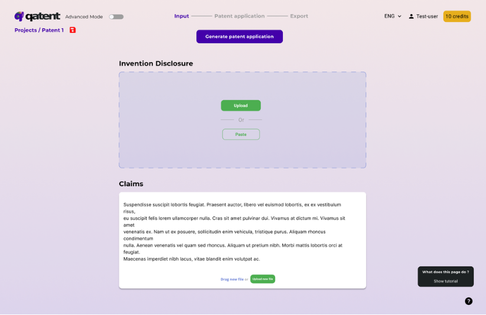
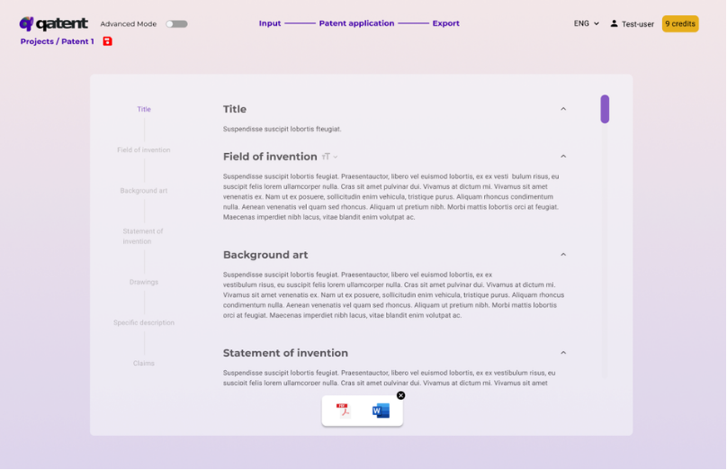
Cette approche s'est accompagnée d'une refonte globale de l'interface, visant à clarifier les parcours, hiérarchiser l'information et rendre l'expérience plus intuitive. En repositionnant le design autour des usages clés plutôt que des logiques techniques, j'ai contribué à transformer un outil expert en une plateforme plus accessible et orientée acquisition.
Faute de tests utilisateurs formalisés sur ce projet, la validation s'est faite en observant les démonstrations commerciales : combien de temps avant la première question, où le prospect hésite, quelles fonctions il ne remarque pas. Ces observations ont alimenté les itérations suivantes autant que les entretiens initiaux.
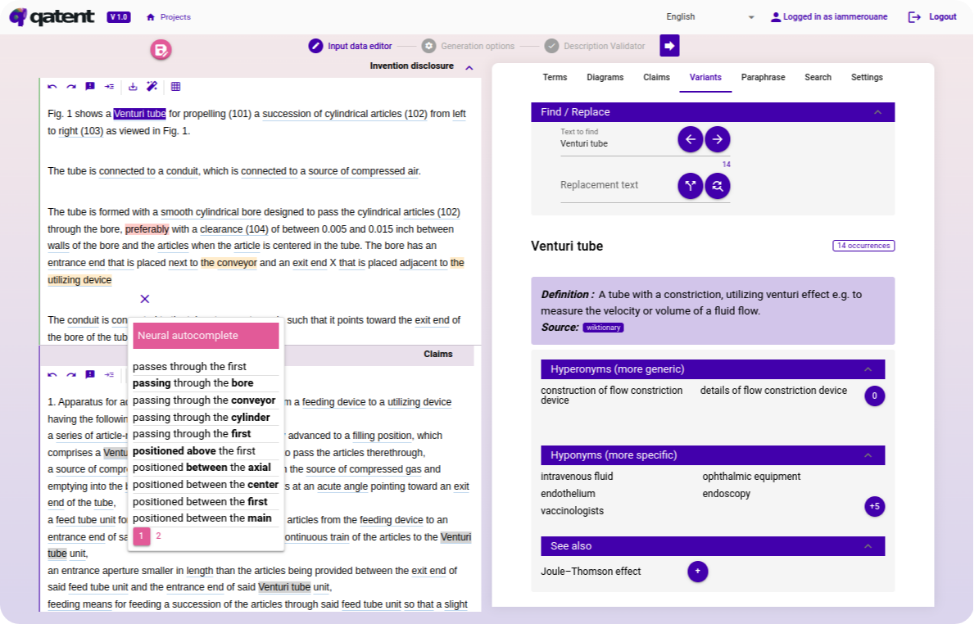
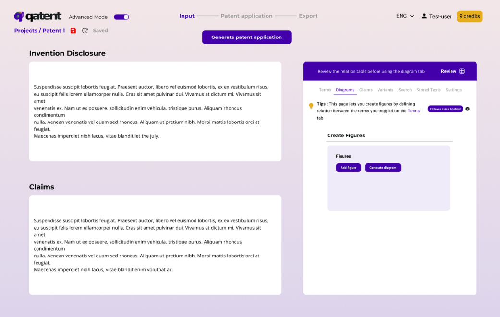
Sur un produit aussi technique, la première session détermine souvent si l'utilisateur reste ou abandonne. J'ai donc conçu un guided tour qui accompagne l'utilisateur pas à pas dans les écrans clés, au moment précis où l'action est attendue, plutôt que de le laisser découvrir seul une interface dense.
Chaque étape explique une notion à la fois, dans le vocabulaire des avocats en droit des brevets, et reste optionnelle : l'utilisateur peut revenir en arrière, avancer ou fermer le tour à tout moment. Cet onboarding réduit la charge cognitive au premier contact, rend la valeur du produit immédiatement lisible et diminue le besoin d'accompagnement commercial lors des démonstrations.
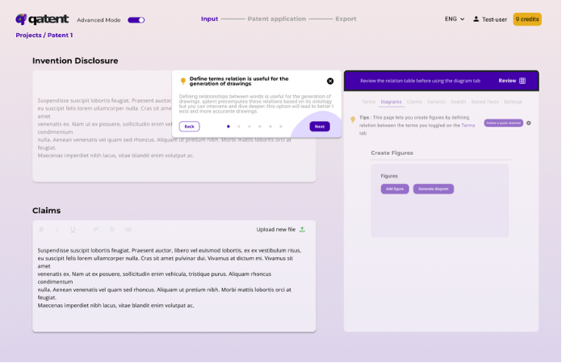
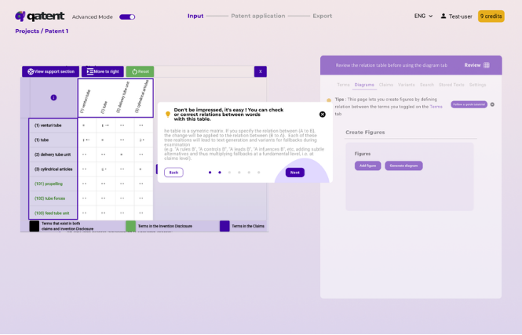
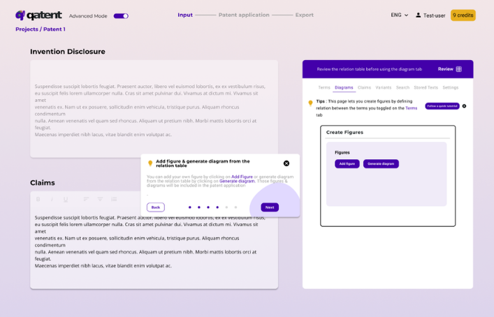
Dans une équipe de sept personnes sans QA dédié, chacun testait son propre travail — et les régressions passaient. J'ai proposé de tenir ce rôle sur les parcours que j'avais dessinés : personne n'était mieux placé pour voir un écart entre ce qui était spécifié et ce qui était livré.
Le déclencheur a été concret. Une démonstration commerciale s'est arrêtée sur un export vide : le brevet était bien généré mais le fichier téléchargé ne contenait que l'en-tête, sur Safari uniquement. Un cas jamais testé, sur un navigateur que personne dans l'équipe n'utilisait.
Une trentaine de cas écrits à partir du parcours annoté, priorisés par ce qui casse une démonstration plutôt que par ce qui est facile à vérifier.
Les deux anomalies les plus utiles n'étaient pas des bugs techniques mais des écarts de conception. La reprise d'un brouillon après déconnexion perdait les termes définis mais gardait le texte : l'utilisateur retrouvait un document qui semblait intact et découvrait le problème à l'export. Nous avons préféré un avertissement explicite au retour, plutôt qu'une restauration silencieuse et partielle.
Le cas de l'apostrophe dans un terme de revendication venait d'un caractère mal échappé. Trivial à corriger, mais révélateur : mes maquettes utilisaient des exemples propres, jamais le vocabulaire réel d'un brevet. J'ai depuis rempli les prototypes avec des extraits de brevets déposés.
Les douze tests automatisés couvrent le chemin qui compte : importer, rédiger, générer, exporter. Ils tournent à chaque livraison et ont surtout servi à empêcher les retours en arrière — deux régressions rattrapées avant recette sur la période.
Ce rôle a changé ma façon de concevoir. Écrire les cas de test avant la livraison m'obligeait à décrire les états d'erreur, les cas vides et les limites de saisie au moment des maquettes, pas après. C'est le retour le plus direct que j'ai eu sur la qualité de mes propres spécifications.
Qatent est le projet où j'ai eu le plus de latitude et le moins de repères. Seul designer dans une équipe d'ingénieurs, sur un domaine — la propriété industrielle — dont j'ignorais tout, j'ai passé les premières semaines à comprendre avant de proposer. C'est le meilleur investissement que j'ai fait sur ce poste.
La leçon principale porte sur la nature du problème. L'équipe pensait avoir un problème d'interface ; les entretiens ont montré un problème de confiance. Les utilisateurs ne refusaient pas l'outil parce qu'il était complexe, mais parce qu'ils ne voyaient pas ce que la machine décidait à leur place, sur un document qui engage leur responsabilité. Une refonte purement visuelle n'aurait rien changé.
J'ai aussi appris à travailler la contrainte du temps comme une donnée de conception. Quand l'utilisateur accorde trois minutes à un produit, la hiérarchie de l'écran d'entrée n'est plus une préférence esthétique : c'est ce qui détermine si le produit est essayé ou abandonné. Le easy mode découle directement de cette contrainte.
Le rôle de recette m'a donné la boucle de retour que je n'avais pas. Voir mes propres écrans échouer sur des cas que je n'avais pas décrits — un caractère spécial, une session interrompue — m'a rendu plus précis en amont. Je spécifie désormais les états d'erreur en même temps que les états nominaux.
Ce que je referais différemment : formaliser des tests utilisateurs plutôt que m'appuyer sur l'observation des démonstrations commerciales. Cela a suffi pour orienter les itérations, mais je n'ai pas de mesure avant/après sur le temps de première rédaction. C'est la donnée qui manque pour prouver l'effet de la refonte.
Talking Hands est une application basée sur l'intelligence artificielle, conçue pour faciliter l'apprentissage de la langue des signes de manière interactive et accessible.
Ce projet axé sur l'accessibilité est né d'une problématique réelle rencontrée par un collègue sourd qui avait des difficultés à participer efficacement à des conférences à distance et à des cours en ligne. Les méthodes de communication traditionnelles, comme le chat textuel, étaient contraignantes et perturbaient le déroulement naturel des présentations et des échanges.
Notre équipe a identifié un manque important en matière d'accessibilité sur les plateformes de visioconférence, où les personnes sourdes ou malentendantes doivent s'appuyer sur des modes de communication textuels lents et perturbants pendant les sessions en temps réel. Cette limite affecte fortement leur capacité à participer de manière fluide et naturelle aux environnements virtuels, qu'ils soient éducatifs ou professionnels.
Sur ce projet, j'ai contribué à l'aspect technique à travers le developpement d'une application Python et en participant à l'entraînement du modèle d'intelligence artificielle. Pour cela, j'ai constitué et utilisé un ensemble de photos représentant les différentes lettres de l'alphabet en langue des signes, afin d'améliorer la reconnaissance des gestes et la précision du système.
Cette implication m'a permis de faire le lien entre conception UX et contraintes techniques liées à l'IA.
La proposition actuelle prend la forme d'une application low-fi, conçue comme un premier prototype fonctionnel capable de reconnaître les lettres de l'alphabet en langue des signes.
Cette version initiale permet de valider les bases techniques de la reconnaissance gestuelle ainsi que les premiers principes d'interaction, avec l'objectif d'itérer progressivement vers une expérience plus complète et aboutie.
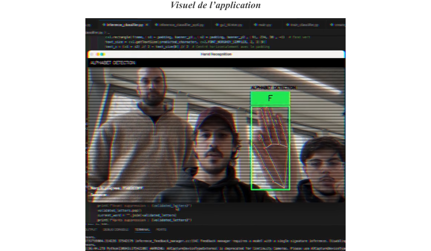
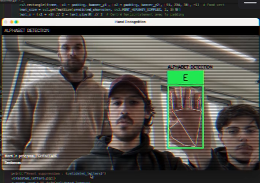
La reconnaissance ne travaille jamais sur l'image brute. MediaPipe extrait les landmarks de la main, dont les coordonnées deviennent directement le vecteur d'entrée du classifieur. Le choix était entre classer l'image entière, un recadrage de la main, ou seulement la position des doigts : cette dernière option réduit fortement la dimension des données tout en conservant l'information utile, et rend le modèle indifférent à l'arrière-plan comme à l'éclairage.
Le retour visuel fait partie de l'expérience : le cadre et la lettre affichés en direct sur l'image indiquent à l'utilisateur que son geste est bien vu, et à quel endroit la caméra le lit.
Le projet est découpé en quatre scripts indépendants, qui se transmettent leur travail par deux fichiers intermédiaires. Chaque étape peut ainsi être relancée seule, sans refaire les précédentes.
Le point sensible de cette architecture est la symétrie entre les deux derniers scripts : si l'extraction des landmarks change à l'entraînement sans changer à l'inférence, le modèle reçoit un vecteur qu'il n'a jamais vu et les prédictions deviennent incohérentes, sans erreur apparente. Cette contrainte est la vraie raison du découpage en fichiers plutôt qu'en un seul programme.
Le jeu de données a été constitué à la main, webcam comprise : 100 images par signe, en variant la distance à la caméra et le cadrage. Le modèle est un Random Forest, entraîné sur 80 % des images et évalué sur les 20 % restantes, tirées de façon aléatoire en conservant la proportion de chaque classe. Sur ce jeu de test, toutes les images sont correctement classées — un résultat à relativiser : trois signes très distincts, capturés par une seule personne dans un seul environnement.
Le prototype reconnaît trois lettres de l'alphabet dactylologique — A, B et L — et non des signes. La démarche s'étend à n'importe quel autre symbole sans changer le pipeline, mais la langue des signes repose sur le mouvement, l'expression du visage et l'espace autour du corps : l'alphabet épelé n'en est qu'une petite partie, utilisée surtout pour les noms propres.
La suite porte donc sur la reconnaissance de séquences plutôt que d'images fixes, et sur l'intégration du retour visuel directement dans l'outil de visioconférence, là où le besoin est né.
Un modèle qui annonce 100 % de précision sur son jeu de test ne prouve rien : il a été entraîné et évalué sur les mêmes mains, la même webcam et la même lumière. Toute la recette a consisté à sortir de ces conditions pour voir où la reconnaissance cède.
J'ai donc traité le prototype comme un produit à éprouver plutôt que comme une démonstration à réussir. Le protocole était volontairement hostile : d'autres mains que les nôtres, une pièce mal éclairée, un fond chargé, et des gestes tenus approximativement plutôt que parfaitement.
Douze cas, écrits pour attaquer les hypothèses du prototype plutôt que pour confirmer qu'il fonctionne.
L'écart entre 100 % et 71 % est le résultat le plus utile du projet. Il ne vient pas d'un défaut du modèle mais du jeu de données : cent images par lettre, capturées d'affilée par une seule personne, décrivent une main et non un geste. Le Random Forest apprend cette main-là.
Deux échecs étaient prévisibles et pourtant non traités. La main gauche produit un vecteur en miroir que le modèle n'a jamais vu ; la présence de deux mains fait choisir la première détectée, sans que rien ne le signale à l'écran. Dans les deux cas le défaut n'est pas la prédiction fausse, c'est l'absence de doute affiché.
Le contre-jour casse la détection en amont : MediaPipe ne trouve pas la main, donc aucune prédiction n'est émise. Ce cas nous a fait ajouter un état explicite « main non détectée », distinct d'une prédiction incertaine — deux situations que l'interface confondait.
Ces essais ont surtout changé la feuille de route. Avant d'ajouter des lettres, il faut élargir le jeu de données à plusieurs personnes et afficher un indice de confiance. Un prototype qui se trompe en silence est plus dangereux qu'un prototype qui reconnaît moins de signes.
La piste que nous voulons explorer est scolaire : une application d'apprentissage de la langue des signes, où l'élève signe devant la caméra et reçoit une correction immédiate. La reconnaissance change alors de rôle — elle ne sert plus à traduire, mais à vérifier.
Ce déplacement rend le prototype pertinent tel quel : pour un exercice, l'application connaît déjà la lettre attendue et n'a qu'à confirmer que le geste correspond. Elle peut donc corriger avec certitude sur un vocabulaire restreint, là où une traduction libre demanderait un modèle bien plus large.
Restent trois sujets de conception avant d'aller plus loin : formuler un retour utile quand le geste est presque juste, doser la progression pour qu'un élève ne se décourage pas sur une lettre, et concevoir l'expérience avec des enseignants et des locuteurs sourds plutôt que pour eux.
Au sein de SG Assurances, j'ai travaillé en tant que product designer sur quatre projets : deux parcours de souscription distribués par BoursoBank, un parcours de souscription pour les professionnels et un outil interne d'analyse de verbatims assisté par IA.
Les captures présentées dans ces quatre projets sont volontairement dézoomées, floutées ou partielles : les parcours et les documents de travail relèvent de données internes à Société Générale. Elles servent à illustrer une démarche, pas à restituer les écrans en détail. Je peux commenter le raisonnement de vive voix.
Verbatim IA est un projet né du besoin exprimé par les conseillers relation client de simplifier l'analyse des verbatims, afin d'anticiper et de répondre plus efficacement aux attentes des clients.
Le suivi des tâches s'effectuait par e-mails, sous forme de comptes rendus, rédigés après les points de présentation des maquettes avec les chiffres de projet.
Ce format écrit servait aussi de trace des décisions de design : chaque compte rendu reprenait les arbitrages validés, ce qui évitait de rejouer les mêmes débats d'un point à l'autre.
Ce détail a compté quand un conseiller a rejoint les points en cours de route : il a rattrapé trois mois d'arbitrages en relisant les comptes rendus, sans que l'on rejoue les discussions.
Des points designs hebdomadaires pour présenter les maquettes et récupérer du feedback pour itérer.
Présenter tôt et souvent, même des écrans incomplets, a permis de corriger la structure de l'information avant d'entrer dans le détail visuel.
À la troisième semaine, le métier a demandé un tri par volume plutôt que par thème. C'était une remise en cause de la structure, mais encore peu coûteuse à ce stade : c'est exactement ce que l'on cherche en montrant tôt.
Atelier de 40 min se divisant en deux exercices et une phase de retour. Une partie pour de la priorisation des features et une partie sur comment ces features peuvent se matérialiser.
L'atelier avait un objectif précis : faire exprimer aux conseillers ce qu'ils regardent en premier dans un verbatim. Les priorités qui en sont sorties ont directement défini la hiérarchie du dashboard.
L'exercice a aussi servi d'arbitre. Deux conseillers voulaient un accès direct aux verbatims bruts, la majorité demandait d'abord une synthèse. Les deux besoins coexistent aujourd'hui, mais dans cet ordre.
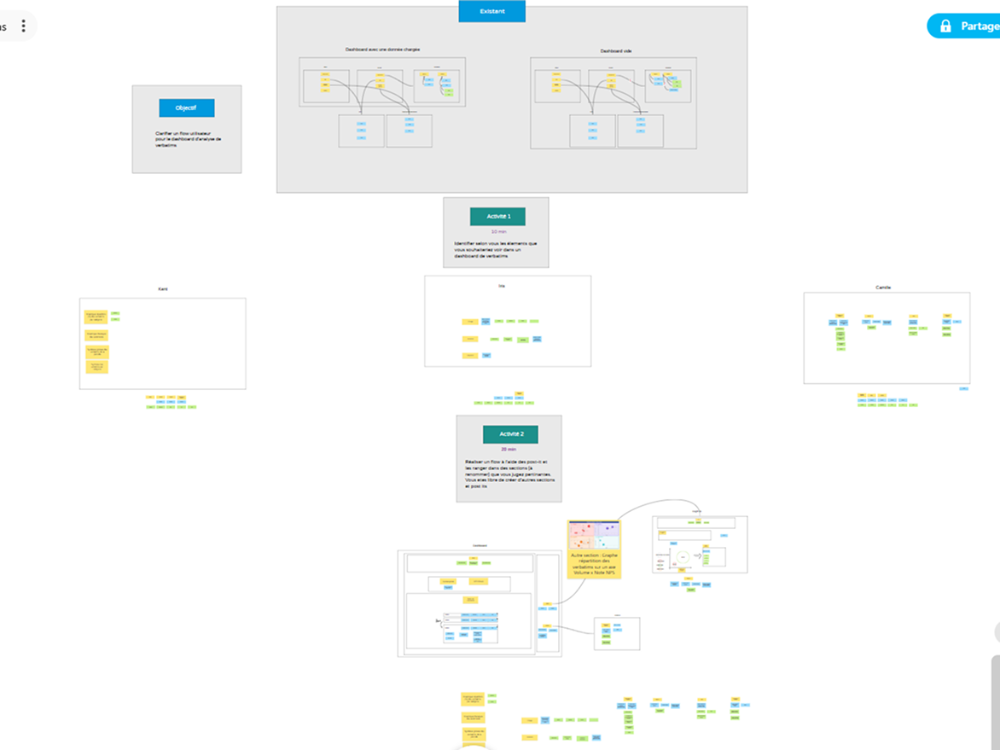
L'atelier nous a donné beaucoup de pistes pour construire les premiers écrans. Les écrans suivants sont les versions finales après quelques itérations alimentées par des retours pendant les points designs.
Le principal enjeu était la densité : afficher assez d'information pour analyser sans transformer l'écran en tableau illisible. J'ai donc séparé la lecture globale, sur l'Accueil, du travail détaillé, sur la page Verbatims.
Un point de friction est resté longtemps ouvert : la note attribuée par l'IA. Les conseillers voulaient pouvoir la corriger, l'équipe technique craignait le bruit introduit dans les données. Le compromis a été une évaluation explicite et tracée, qui alimente le modèle sans écraser sa sortie.
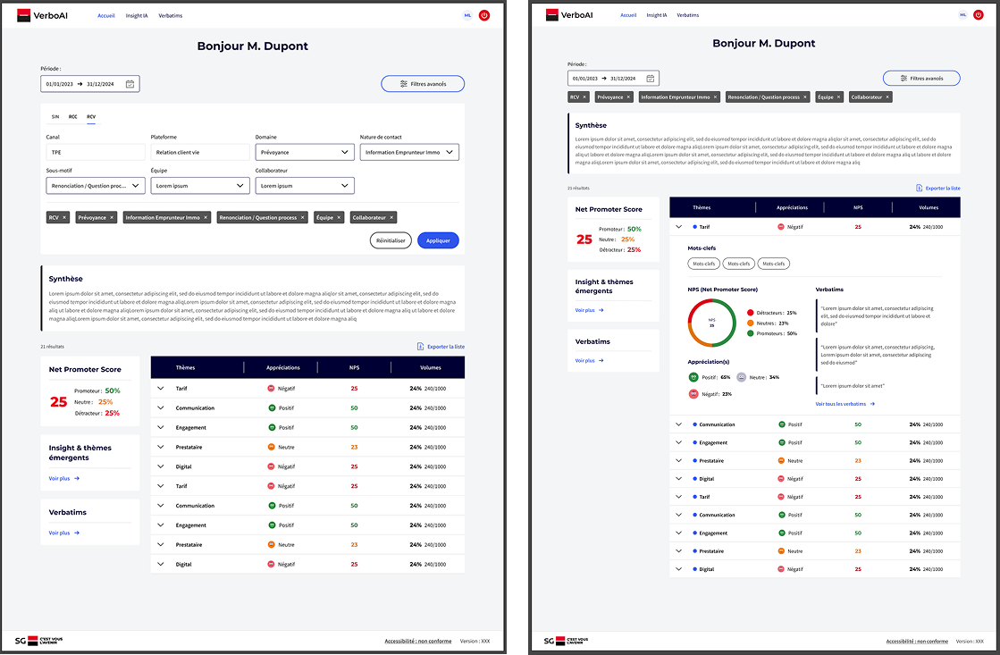
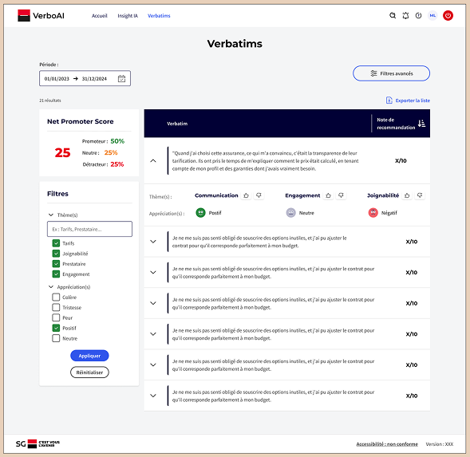
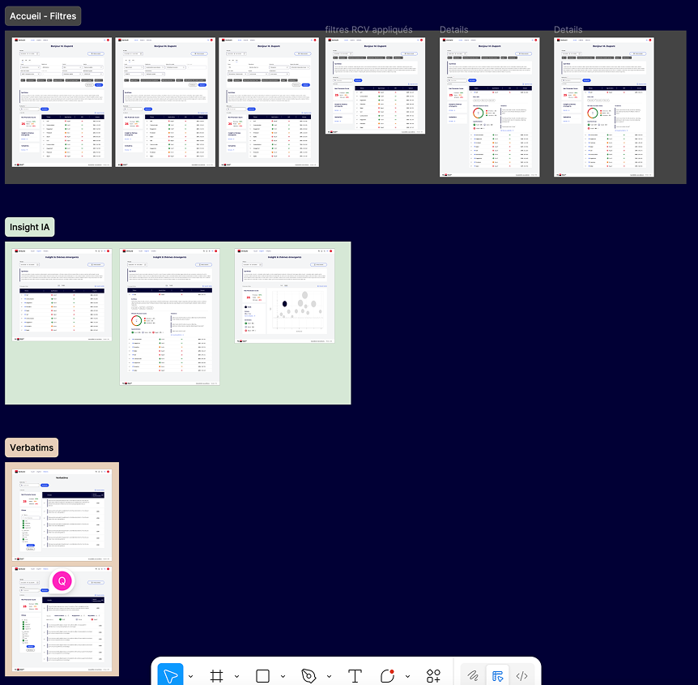
Génépro et Généclé sont des assurances destinées aux professionnels. Jusqu'à présent, leur souscription s'effectuait via d'anciens outils proposant un parcours fragmenté. Il a donc été décidé de mettre en place un parcours unique de souscription, intégré dans un environnement dédié.
Le suivi des tâches s'effectuait grâce aux commentaires laissés sur les maquettes.
Commenter directement sur les écrans a rapproché le feedback de son contexte : chaque remarque restait rattachée à l'élément concerné plutôt qu'à un compte rendu séparé.
Effet secondaire utile : les développeurs ont commencé à commenter les maquettes eux-mêmes pour signaler les cas techniquement impossibles, avant même la phase de spécification.
Des points designs hebdomadaires pour présenter les maquettes et récupérer du feedback et itérer.
Ce rythme hebdomadaire servait surtout à aligner le métier, le développement et l'homologation sur une même version de référence.
Une seule règle a suffi à rendre ces points efficaces : ne présenter que des écrans complets sur un scénario donné, jamais des fragments. Les discussions portaient alors sur le parcours et non sur des détails isolés.
Atelier de tri par cartes sur une durée de 45 min.
Le tri par cartes a permis de trancher collectivement le découpage du parcours en étapes, un sujet sur lequel les avis métier divergeaient nettement.
Le désaccord principal portait sur la place des bénéficiaires : au début du parcours pour les uns, juste avant la validation pour les autres. Le tri par cartes a tranché en rendant visible que cette information dépendait de choix faits plus tôt.
L'atelier nous a donné beaucoup de pistes pour construire les premiers écrans. Les écrans suivants sont les versions finales après quelques itérations alimentées par des retours pendant les points designs.
Deux parcours devaient cohabiter sans dupliquer le design : les écrans reposent sur une trame commune, seul le contenu propre à chaque offre change.
Cette trame commune a réduit d'environ un tiers le nombre d'écrans à maquetter, et surtout garanti qu'une correction faite sur un parcours ne soit pas oubliée sur l'autre.
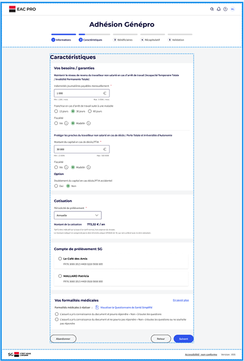
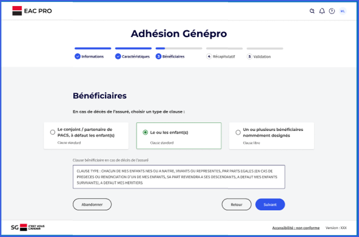
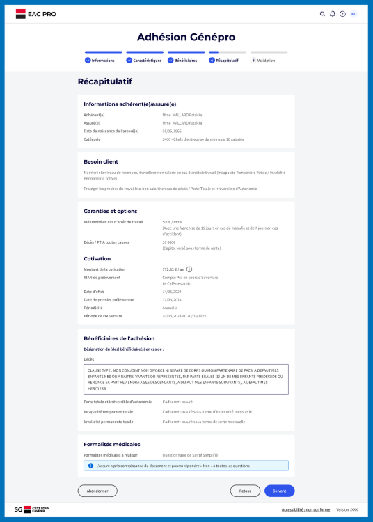
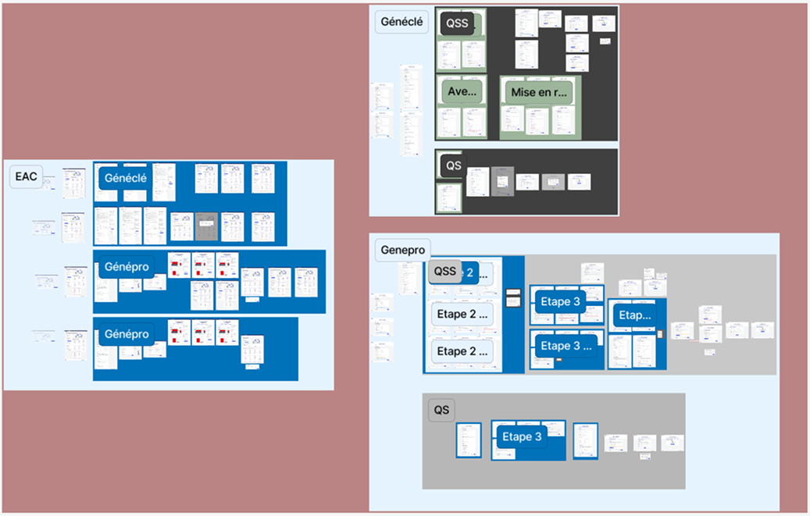
Les tests utilisateurs consistaient à exposer différents scénarios aux conseillers en agence pendant une durée de 45 min.
Les tests ont surtout révélé des problèmes de vocabulaire et d'ordre des questions : deux corrections peu coûteuses en conception, mais décisives sur la capacité des conseillers à aller au bout du parcours.
Un test a été particulièrement instructif : une conseillère a lu le récapitulatif à voix haute à son client, ce que nous n'avions pas anticipé. Le récapitulatif a été retravaillé pour rester lisible à l'oral, en phrases plutôt qu'en libellés.
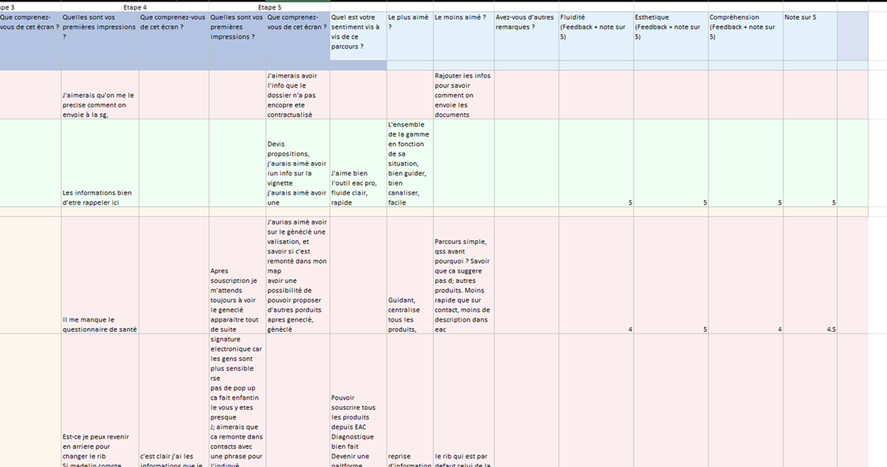
Le produit Alabri est une assurance habitation distribuée par BoursoBank. L'assurance est souscrite auprès de SG Assurances. La conception du parcours est effectuée par SG Assurances.
Le suivi des tâches s'effectuait auparavant par e-mail, sous forme de comptes rendus, ce qui entraînait des oublis et un manque de clarté. Afin d'optimiser ce processus, nous avons mis en place un fichier Excel dédié au suivi des tâches. Différents paramètres, définis conjointement avec les parties prenantes, permettent désormais de mieux qualifier et prioriser chaque tâche.
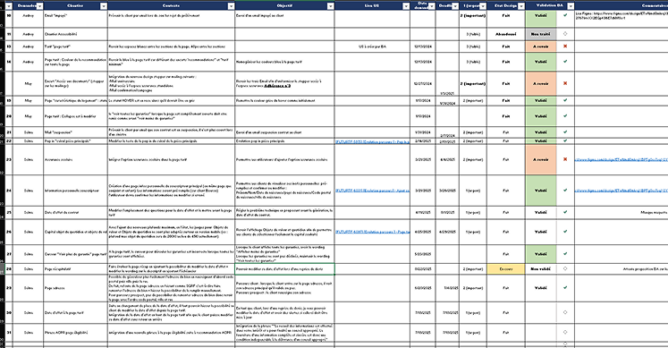
Un point design hebdomadaire pour discuter et présenter les tâches faites et à faire pour le prochain point design.
Les missions ont été variées, allant de projets de grande envergure à des actions d'amélioration rapide.
Cette diversité demandait de garder une vision d'ensemble du parcours tout en livrant des correctifs au rythme des sprints.
En pratique je tenais deux listes : les chantiers, discutés en point design, et les correctifs rapides, traités directement avec les développeurs. Sans cette séparation, les petits sujets prenaient toute la place.
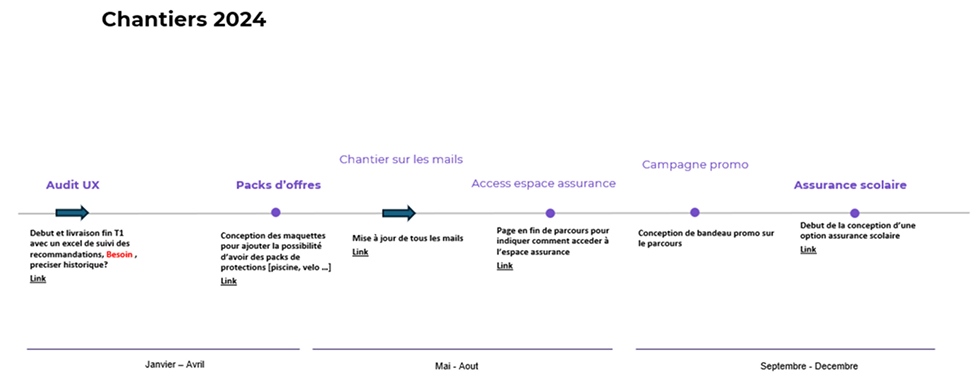
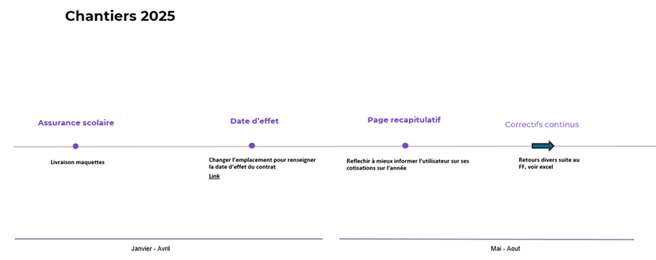
Maintenir les maquettes au niveau de la recette a fait de Figma la référence partagée du parcours : les échanges portaient sur des écrans réels plutôt que sur des descriptions.
Cela a changé la nature des réunions : un homologateur a pu vérifier un cas limite en ouvrant la maquette pendant la discussion, au lieu d'attendre la livraison en recette.
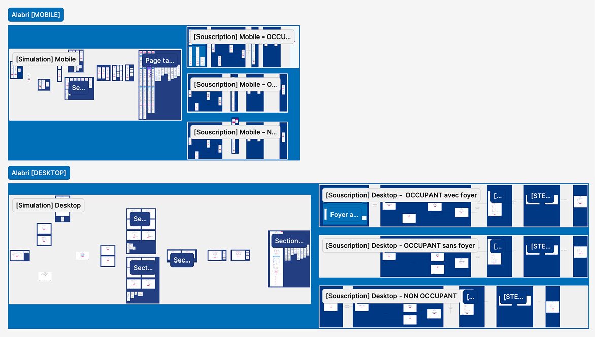
Pour réaliser cet audit, j'ai appliqué les critères de Bastien & Scapin à l'ensemble des écrans du parcours. Les erreurs de design identifiées ont ensuite été classifiées dans un fichier Excel, selon différents paramètres définis en concertation avec les parties prenantes.
Enfin, les résultats ont été présentés aux collaborateurs du projet (environ 15 personnes) lors d'une réunion dédiée.
Classer chaque erreur par critère et par gravité a transformé l'audit en backlog priorisé, directement exploitable par les développeurs.
Présenter l'audit à une quinzaine de personnes demandait un cadrage : j'ai montré cinq erreurs représentatives plutôt que la liste complète, puis renvoyé au fichier pour le détail. Les corrections les plus visibles ont été planifiées dans les deux sprints suivants.
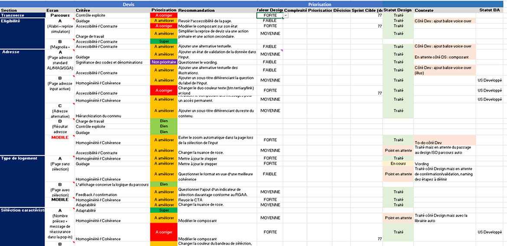
L'ajout des packs a nécessité plusieurs mois de conception pour avoir une version finale. Il a fallu ajouter plusieurs éléments de design à différents endroits du parcours et réfléchir à la cinématique en lien avec les règles de gestion.
L'enjeu était d'enrichir l'offre sans alourdir le parcours : les packs apparaissent au moment du choix des garanties, avec un impact tarifaire visible immédiatement.
La contrainte venait des règles de gestion : certains packs sont incompatibles entre eux. Plutôt qu'une erreur après validation, les combinaisons impossibles sont désactivées à la sélection, avec l'explication à côté.
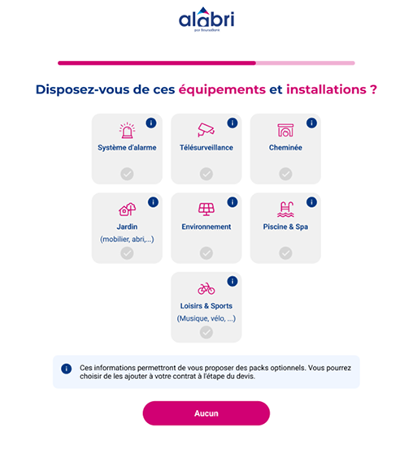
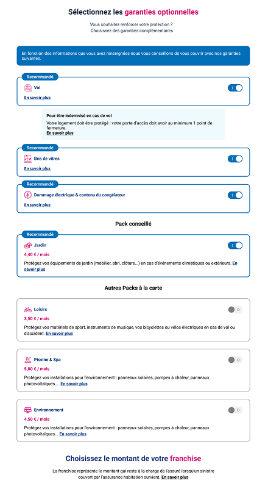
Le produit Carapass est une assurance automobile distribuée par BoursoBank. L'assurance est souscrite auprès de SG Assurances. La conception du parcours est effectuée par SG Assurances.
Le suivi des tâches était fait par mail sous la forme de CR, résultant en des oublis et un manque de clarté. Nous avons mis en place un fichier Excel pour optimiser le suivi des tâches à effectuer. Différents paramètres ont été mis en place avec les parties prenantes pour qualifier la tâche.
Rendre le suivi visible a réduit les allers-retours et permis d'objectiver la priorisation avec les parties prenantes.
Le fichier a aussi servi de mémoire : quand une demande revenait deux mois plus tard, la ligne existait déjà, avec la raison pour laquelle elle avait été repoussée.
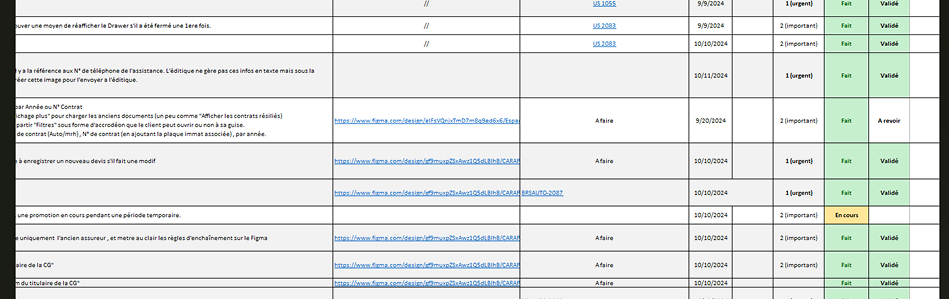
Un point design hebdomadaire pour discuter et présenter les tâches faites et à faire pour le prochain point design.
Les missions ont été très diverses, de chantiers à des améliorations rapides.
Travailler sur un parcours encore en conception laissait plus de latitude pour poser les fondations UX avant l'arrivée des contraintes techniques.
J'en ai profité pour cadrer le parcours de bout en bout avant d'entrer dans les écrans, ce qui a évité de concevoir des étapes que les règles d'éligibilité rendaient de toute façon inutiles.
Les maquettes servaient de support de décision à chaque point : elles rendaient tangibles les règles de gestion discutées avec Boursorama.
Les échanges avec Boursorama portaient autant sur la marque que sur l'ergonomie : deux équipes design, deux systèmes, un seul parcours pour l'utilisateur. Les maquettes ont servi de terrain commun pour arbitrer sur des écrans plutôt que sur des intentions.
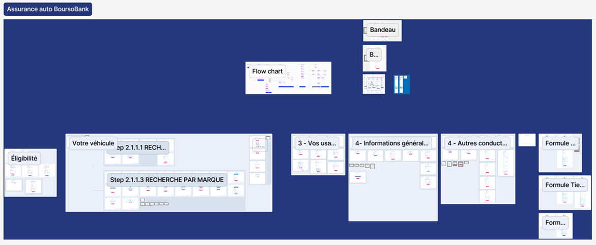
La page tarif est une partie très importante du parcours, c'est ici que l'utilisateur va valider sa formule pour passer à la souscription. Il faut qu'elle soit à la fois claire et exhaustive. Elle regroupe toutes les informations et options de l'offre. Suite à de nombreux points et échanges avec Boursorama, voici le résultat :
La difficulté était de rendre comparables des formules qui n'ont pas le même nombre d'options, sans multiplier les écrans ni masquer le prix final.
Le principe retenu est simple : le prix reste affiché en permanence et se met à jour à chaque option cochée. Le récapitulatif devient un outil de simulation plutôt qu'un écran de confirmation.
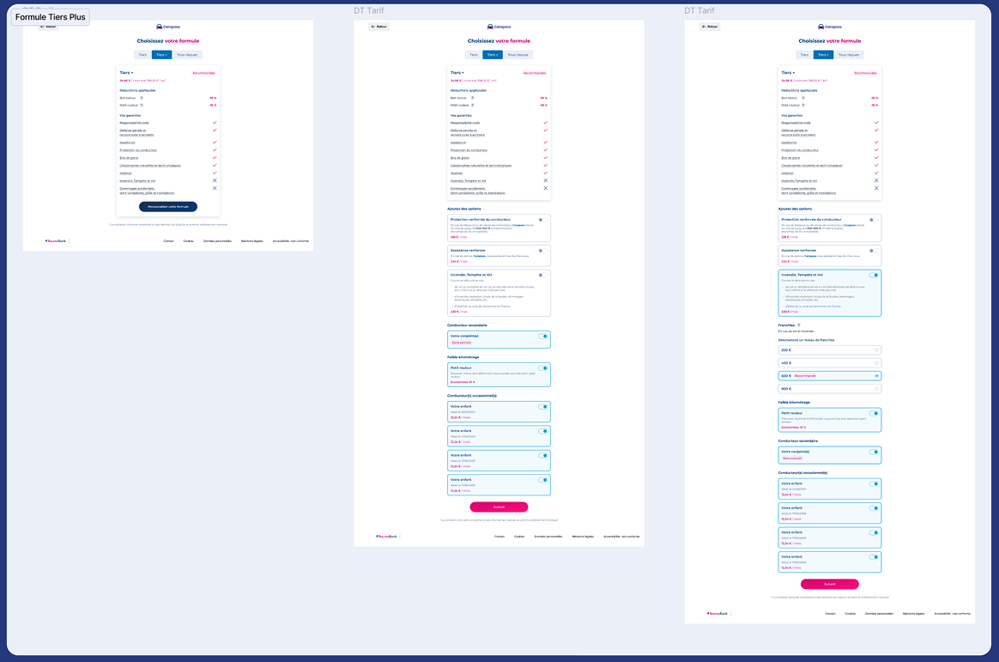
Voici une autre partie du parcours qui est le fruit d'itérations entre Boursorama et notre équipe.
Partir de la marque plutôt que d'un formulaire complet réduit l'effort de saisie en début de parcours, là où l'abandon est le plus fréquent.
Un détail a demandé plusieurs itérations : que faire quand la marque saisie n'existe pas dans le référentiel. Nous avons préféré une suggestion immédiate à un message d'erreur, pour ne pas bloquer l'utilisateur sur une faute de frappe.
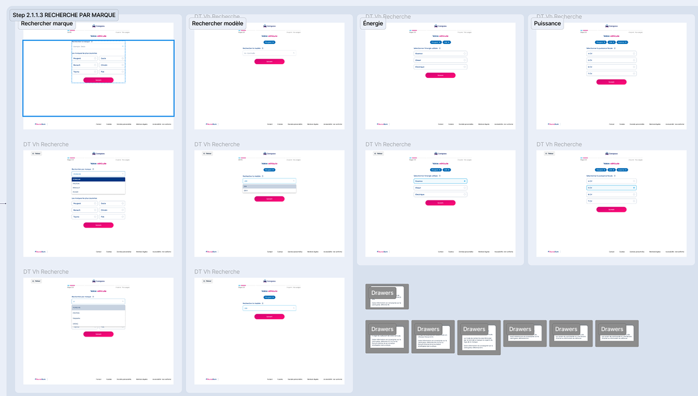
Un site privé pour un mariage de décembre 2026 dans les Hautes-Pyrénées : confirmation de présence, guide pratique pour les invités et espace de suivi pour les organisateurs. Conçu et développé seul, mis en ligne sur GitHub Pages.
Un mariage se pilote habituellement par messages : un groupe WhatsApp pour les questions, un tableur pour les réponses, des relances individuelles pour les manquants. Le problème n'est pas le manque d'information mais sa dispersion — chaque invité repose la question déjà posée par un autre.
Le site part de là. Une seule adresse, protégée par le mot de passe figurant sur l'invitation, qui répond à la place des organisateurs : où, quand, comment venir, où dormir, et que dois-je confirmer.
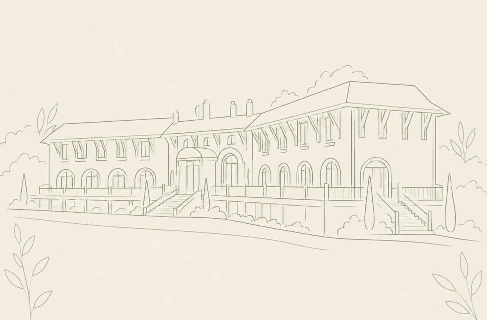
La contrainte d'âge a eu le plus d'effet sur les écrans : un seul objectif visible à la fois, des zones tactiles larges, aucun terme d'interface qui suppose une habitude du web. La page d'accueil ne propose que deux actions — répondre, ou consulter le guide.
Le réseau incertain a conduit à garder la réponse envoyée en mémoire côté navigateur : un invité qui revient voit sa réponse et peut la modifier, au lieu d'en créer une seconde en croyant que la première n'est pas passée.
Le parti pris est un site statique sans serveur : tout tient dans un fichier HTML publié sur GitHub Pages, et les réponses partent vers une feuille Google Sheets via un script Apps Script déployé en application web.
Cette architecture a une limite que j'ai documentée dans le dépôt plutôt que de la cacher : le code organisateur protège l'interface, pas l'API. Toute personne connaissant l'URL du script peut techniquement lire les réponses. C'est acceptable pour une liste d'invités, pas pour des données sensibles — et c'est le genre d'arbitrage qu'il vaut mieux écrire noir sur blanc que découvrir plus tard.
Le site est découpé en trois espaces distincts : la porte d'entrée par mot de passe, le parcours invité (accueil, formulaire, guide) et l'espace organisateur. Le guide se parcourt avec une barre d'onglets en bas d'écran — Lieu, Programme, Transports, Hébergements — parce qu'un invité y revient plusieurs fois et cherche à chaque fois une chose précise.
Le contenu est écrit pour lever les questions dans l'ordre où elles arrivent. Le programme annonce d'emblée ce qui est incontournable et ce qui est optionnel ; les hébergements distinguent la famille, logée au domaine, des amis qui doivent réserver alentour ; les transports rappellent qu'une automobile est indispensable et donnent les distances depuis les aéroports.
Prototype mobile fidèle aux maquettes, avec données fictives. Testez l'inscription, le guide, les transports, les hébergements et la FAQ.
Le formulaire ne demande que ce qui sert à organiser : présence, accompagnants, participation au brunch du lendemain, allergies et régimes alimentaires, besoins de covoiturage. Chaque champ correspond à une décision réelle des organisateurs — un plan de table, une commande au traiteur, une réservation. Rien n'est collecté « au cas où ».
Le brunch du lendemain est le cas le plus délicat : optionnel, payant, 30 € par personne. Il fallait l'annoncer sans qu'il ressemble à une obligation, et permettre le paiement sans caisse en ligne. La réponse tient dans le formulaire, le paiement se fait ensuite par lien Revolut, par Wero ou par virement, avec un bouton qui copie l'IBAN — la solution la moins élégante mais la seule qui fonctionne pour tout le monde.
L'espace organisateur affiche les réponses reçues, permet d'en supprimer une et d'exporter le tout en CSV. C'est volontairement pauvre : il ne remplace pas la feuille de calcul, il donne un aperçu depuis un téléphone sans avoir à l'ouvrir.
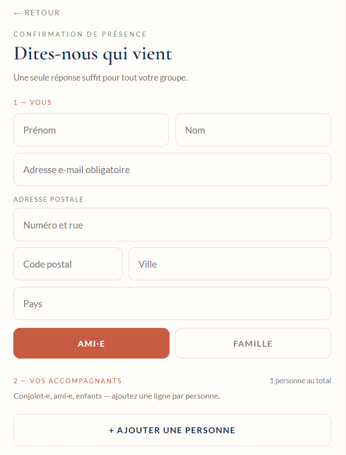
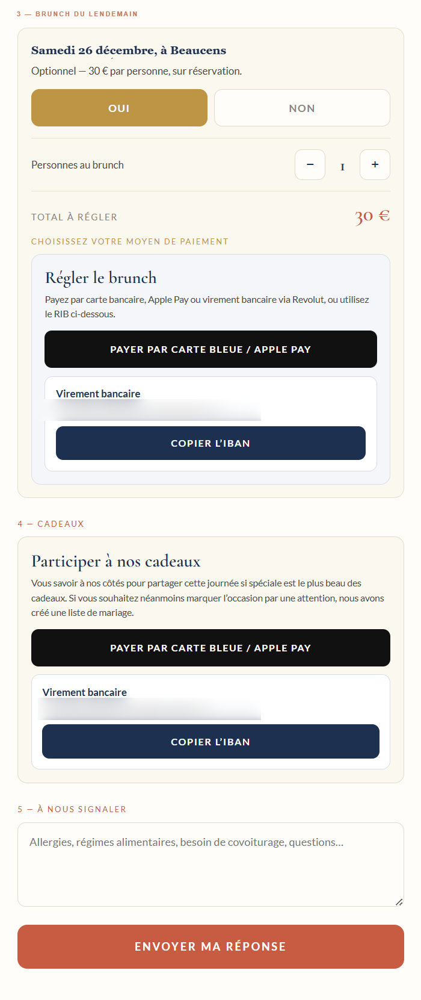
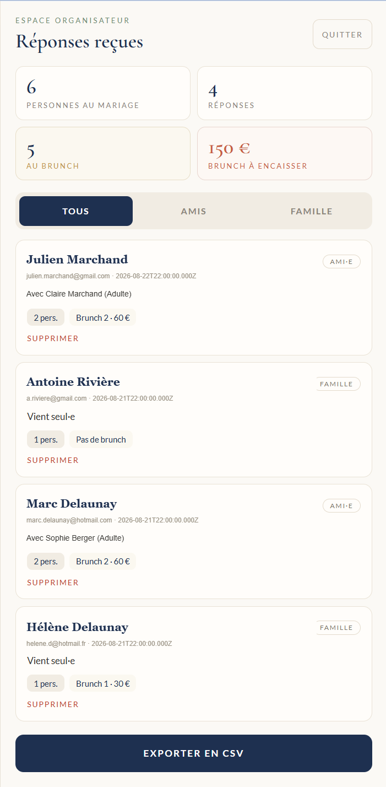
Un site de mariage n'a pas de phase de recette : il est consulté par cent vingt personnes le jour où le lien part, sur leurs téléphones, et une erreur de RSVP se traduit par un appel téléphonique. J'ai donc testé avant l'envoi, en essayant de casser le formulaire plutôt que de vérifier qu'il fonctionne.
L'enjeu principal n'était pas l'affichage mais l'intégrité des réponses : un doublon, un accompagnant perdu ou un envoi silencieusement échoué se paient en travail manuel pour les organisateurs.
Vingt-deux cas, priorisés par ce qui produit un appel téléphonique s'il échoue.
Le double envoi était le risque le plus coûteux : rien n'empêchait un invité de répondre deux fois, et les organisateurs se retrouvaient à arbitrer entre deux versions. La correction n'est pas technique mais conversationnelle — l'invité qui revient voit sa réponse précédente et la modifie, au lieu d'en créer une nouvelle.
La perte de réseau pendant l'envoi donnait le pire scénario possible : l'invité croyait avoir répondu, rien n'était enregistré. Le formulaire conserve désormais la saisie localement et affiche une confirmation explicite, jamais une redirection optimiste.
L'export CSV cassait sur les accents dès qu'il était ouvert dans Excel — un détail invisible en développement, bloquant pour la personne qui gère les tables. Corrigé par l'encodage, mais trouvé seulement parce que j'ai testé l'usage réel du fichier et pas seulement sa génération.
Le test avec six proches a été le plus instructif pour un coût nul. Deux d'entre eux ont cherché le bouton RSVP en haut de page alors qu'il était en fin de parcours ; c'est ce qui a motivé le rappel permanent en bas d'écran. Aucun n'avait lu la FAQ avant de poser sa question.
C'est le projet où j'ai eu le plus de liberté et le moins d'excuses : pas de design system à respecter, pas de contrainte technique héritée, mais des utilisateurs réels qui n'ont pas de service support et qui appellent si le site ne répond pas à leur question.
Il m'a aussi rappelé qu'une bonne partie du travail UX est du travail d'écriture. Sur ce site, presque chaque problème d'usage se réglait en reformulant une phrase plutôt qu'en ajoutant un composant.
Enfin, faire le design et le développement dans le même fichier change le rythme : une hésitation sur la hiérarchie se tranche en la voyant sur un téléphone, dans la minute. C'est la façon de travailler que je cherche à garder dans un contexte d'équipe.
En dehors du design, je fais de la musique. C'est là que j'ai appris à finir des choses, à les faire écouter et à recommencer.
Je joue de la guitare et je compose. Un morceau se travaille comme une interface : une idée simple au départ, beaucoup de versions ensuite, et le moment délicat où il faut retirer plutôt qu'ajouter.
Deux endroits où ce travail est visible : mes compositions sur SoundCloud, et les tablatures que je relève et publie sur Ultimate Guitar. Les tablatures sont l'exercice le plus proche de mon métier — transcrire ce qu'on entend dans une notation que quelqu'un d'autre pourra lire et rejouer sans explication.
Mon autre passion, que je filme et monte sur ma chaîne YouTube. Tourner, cadrer, monter : c'est aussi un travail de rythme et de sélection, décider ce qui reste et ce qui part.